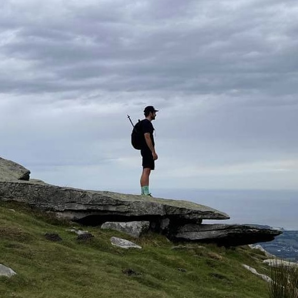

I'm a Deep Learning Scientist at Safran.AI with 7 years of experience building computer vision systems for satellite imagery analysis in defense applications. I've worked on projects ranging from automatic image labeling (reducing annotation time by 40%) to sound event detection, and I currently lead the development of a deep learning training library used by 4+ production teams.
My work focuses on the training library - implementing novel architectures, optimizing training techniques, and building orchestration pipelines. Before Safran, I was a tech lead at Capgemini Engineering, where I mentored junior data scientists and built computer vision models for aircraft engine analysis within Palantir Foundry.
I enjoy taking research ideas and turning them into production systems - writing PyTorch models, deploying detection algorithms, and making sure everything actually works in real-world operations.
About me:
Outside of work: